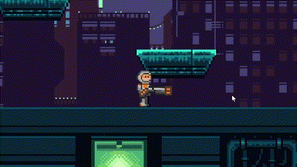

About
In this 2D shooter-platformer game, I developed a dynamic survival round system where players battle against endless waves of diverse enemies to earn high scores.
I implemented a versatile weapon controller system requiring players to manage ammunition carefully.
I also introduced an ultimate weapon ability to add dynamic and complex gameplay.
Project Info
- Role: Game Developer
- Team Size: 1
- Time Frame: February 2025 - Present
- Engine: Unity
- Language: C#
- Tool: Aseprite
Ultimate Ability Implementation
• Implemented an ultimate ability that fills a progression UI bar as enemies are defeated, rewarding skilled play.
• Triggering the ability with the 'Q' key temporarily upgrades the player's weapon to a high-powered machine gun and launches a barrage of homing missiles periodically.
• To help players track their ultimate's duration, a UI bar replaces the current ammo bar to clearly display on the screen.
• Once the duration expires, the player's weapons revert to their standard forms, maintaining game balance.
View Implementation Code on GitHub

Customizable Loot and Stat System Implementation
• Every enemy game object has a chance to drop certain collectible items such as shotgun ammo, rifle ammo, health pack and coins.
• These drops are determined using a C# dictionary that maps each enemy’s stats to specific drop chances and item amounts for future loot system balancing.
View Implementation Code on GitHub
Other Contributions
• To change game logic and balance, I learned to integrating Unity's UI system and game object logic with dictionary database manager scripts
• To ease testing, debugging and adding new gameplay features, I learned to develop global and re usable scripts such as mouse tracking, shooting, loot and enemy scripts
• I connected animations to player's walk and idle script
